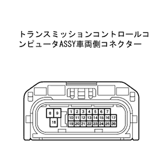

)
)Electronically Controlled Automatic Transaxle [ECT] (U660E) Terminals of ECU |
)| Terminal No. | Terminal Symbol | Terminal Name |
|---|---|---|
| 1 | BATT | Power source (BATT) |
| 3 | SPD | Vehicle speed sensor |
| 6 | CAN+ | CAN communication (EFI ECU) |
| 7 | CAN- | CAN communication (EFI ECU) |
| 8 | E1 | GND |
| 9 | E01 | GND |
| 10 | STA | ST relay |
| 11 | NSW | Neutral Start Switch |
| 12 | STP | Stop Light Switch |
| 13 | IGSW | Ignition switch |
| 15 | R | Neutral start switch (R) |
| 16 | D | Neutral start switch (D) |
| 18 | +B | Power source (+B) |
 |
Disconnect the transmission control computer connector.
Using SST (Toyota electrical tester), measure the voltage and resistance between each terminal of the actuator assembly wire harness side connector and body ground.
| Terminal Symbol [Terminal No.] | Input/Output | Item | Measurement Condition | Specified Condition |
|---|---|---|---|---|
| 1(BATT)←→8(E1) | - | Voltage | Always | 11 to 14V |
| 8 (E1) ←→ Engine ground | - | Resistance | Always | Below 1 Ω |
| 9 (E01) ←→ Engine ground | - | Resistance | Always | Below 1 Ω |
| 10(STA)←→8(E1) | Input | Voltage | IG ON, shift lever in P or N position | 2V or less |
| 10(STA)←→8(E1) | Input | Voltage | During cranking | 7.5 to 14V |
| 11(NSW)←→8(E1) | Input | Voltage | IG ON, shift lever in P or N position | 2V or less |
| 11(NSW)←→8(E1) | Input | Voltage | IG ON, shift lever in any position other than P or N | 7.5 to 14V |
| 12(STP)←→8(E1) | Input | Voltage | Brake pedal depressed (switch ON) | 7.5 to 14V |
| 12(STP)←→8(E1) | Input | Voltage | Brake pedal released (switch OFF) | 0 to 1.5V |
| 15(R)←→8(E1) | Input | Voltage | Shift lever in R | 7.5 to 14V |
| 15(R)←→8(E1) | Input | Voltage | Shift lever in any position other than R | 0 to 1.5V |
| 16(D)←→8(E1) | Input | Voltage | Shift lever in D or M position | 7.5 to 14V |
| 16(D)←→8(E1) | Input | Voltage | Shift lever in any position other than D or M | 0 to 1.5V |
| 18(+B)←→8(E1) | - | Voltage | Engine stopped, IG ON | 11 to 14V |